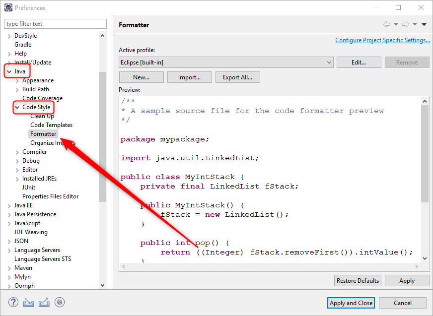

Заменяй все TAB-ы на пробелы всегда!, но ее почему-то не видно
 .
.
Слева вы увидите дерево навигации по основным разделам настроек.
Выберите в этом дереве пункт Java → Code Style → Formatter.
После чего в центральной части окна откроется панель с настройками форматирования:

И вот уже прямо сейчас бы и хотелось сразу нажать какую-нибудь волшебную кнопку типа —
Заменяй все TAB-ы на пробелы всегда!
, но ее почему-то не видно
.
И для того чтобы ее найти, придется сначала прочитать скучную теорию о
профилях настроек форматирования в Eclipse
.
Эта скучная теория ждет вас на следующем шаге упражнения.